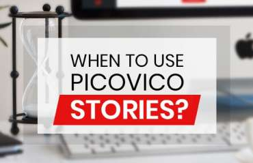
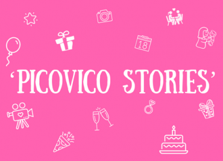

Wedding is a lifetime memory. So it’s normal for you to not compromise on anything; starting from the invitation card itself. We appreciate your urge for perfection and that is why we’ve got you some really nice wedding invitation video theme designed by professionals. Create incredible wedding invitation videos in 5 easy steps with Picovico Login to Picovico and select the ‘Create’ button Choose either ‘Slideshow Video’ or ‘Story’ and…

Wedding is amongst the colossal events in a person’s life. The day brimming with emotions, like wonder, excitement, love and laughter, all captured in picture and video memories. While some of those might be the posed shots, others might be the perfectly timed hilarious behind the scenes shots. Posed or candid wedding memories are all very special. This wedding season has seen many nuptials and with each of them…

Weddings are amongst one of the biggest milestones a person experiences in his/her life. The day itself is filled with wonder, excitement, love and laughter. But a lot of strings have to be tied together to pull off a perfect wedding. Hence, the emotion people feel the most during marriage, besides happiness is stress. The want for a perfect big day is stressful and requires plentiful work. And even small…

Wedding slideshows are among the best things that come out of a wedding, other than the obvious fact that two people get married and exchange the promise of happiness and togetherness. Wedding slideshow videos leave everyone at the wedding with a big “AWW”. In our previous blog, we discussed How to Make a Wedding Slideshow Presentation with Picovico – a wedding video maker Now, let’s focus on how you can…

Wedding Slideshows have become a tradition over the years. This is one tradition, perhaps no one wishes to end. Wedding slideshows are great, whether you’re choosing to show it on your reception, rehearsal, showers, or the wedding party. It gives the crowd an insight into the bride and groom’s world. The possibilities of making contents for your video is virtually endless. Some choose to build a story about how the…

Emotional, Exciting, Happiness, Celebration and Love in a single day resonates weddings. All in all weddings are a great day not only for the couple getting married but also the people around them. There is a new trend in town with weddings – Destination Weddings. People want to do something out of the ordinary on their big day. Couples all over the world pick the most beautiful places – Hawaii,…

Stories are basically famous in social networking sites. We know Snapchat stories, Instagram stories, Facebook stories and so on. But what actually are these stories? Merely a reference to what we’ve been doing in our everyday life? Yes, exactly! This is where Picovico thought of coming up with video stories for its users. Everyday, something new is happening in each of our lives; like, a new life is born to…

Isn’t everything in life easier when you have a preset base to work with? Stories – is our attempt to simplify your video-making journey at Picovico. Picovico Stories provide you with a pre-defined video templates. The idea behind Picovico Stories developed when we received several queries that read “Can we create a video same like the one in the sample?” That’s when we decided to go for a template approach…

The fourth sign of the zodiac is Cancer. They are incredibly intuitive and sentimental beings. This attitude reflects in how they deal with life and loved ones around them. Cancers are sensitive beings who are quite in touch with their emotions. They like to have meaning in everything. They care deeply for their friends and family. All these lovely traits can make it difficult to choose appropriate gifts for them.…